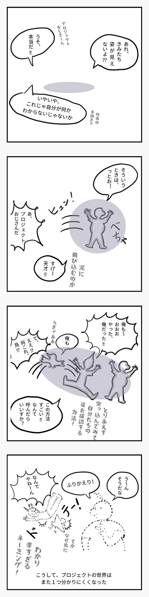

「もつれる」プロジェクトを見てみたい
第2回 オートポイエーシスとシンポイエーシス
ぼくプロジェクト
おじさん
(14) ふりかえり

WHAT’S LOVE* GOT TO DO WITH?
Read the Zine here. (PDF 3.2MB)
Get the printable (A4) version. (PDF 1.9MB)
THE ARCHITECTURE OF INTIMACY
南の島の
ウェブサイト
毎月の Journal は Project Theory Probe のウェブサイトにアーカイブされます。Project Theory Probe の活動場所である GitHub や Digital Garden へのリンクなども提供しています。
今月の概念
破れ（crack）
Concept of the Month
Crack
実践！プロジェクト推進のコツ
どこからそう思いましたか？